SourceTree 提供 Custom Actions 的功能
讓 User 可以自訂語法或寫 Shell Script 來執行
目前自己寫了三個 Shell Script
備份 .git
Script
目的是將 project 底下的 .git 備份出去
有時會想要測試一些 git 指令，卻又怕把 repo 搞亂、搞壞
所以可以先把 .git 備份起來
語法裡有使用 rm -rf 指令，請小心使用
語法裡有使用 rm -rf 指令，請小心使用
語法裡有使用 rm -rf 指令，請小心使用
檔案路徑：~/SourceTree_Actions/backupGitFolder.sh
$1 → 在 SourceTree 使用時，設定讓它帶入 repo path，為了區別不同 product 下的 .git
|
|
使用方式
|
|
開啟設定介面 SourceTree → Preferences 或 快速鍵 CMD + ,
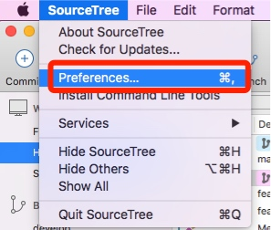
切換至 Custom Actions
新增 Add
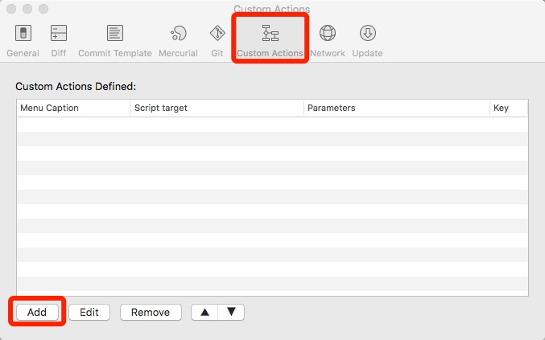
Menu Caption → backupGitFolder (自訂)
Script to run → bash (使用 bash 來執行 script)
Parameters → /SourceTree_Actions/backupGitFolder.sh $REPO script 路徑，且帶入參數 $REPO
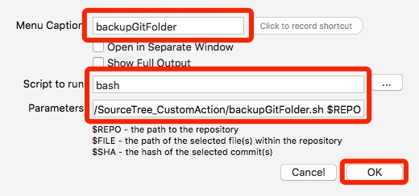
新增完後會看到剛新增的項目
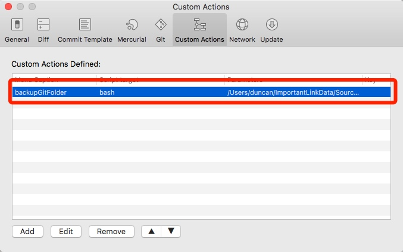
因為此 Script 是針對 Repo 來做處理，所以只要在任一個 Commit 上按右鍵即可
右鍵 → Custom Actions → Repository Actions → backupGitFolder
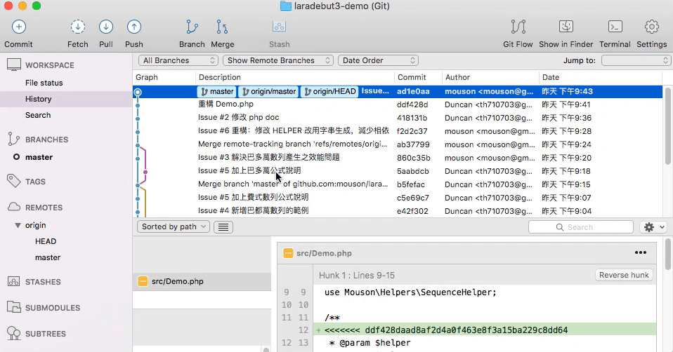
執行完畢後，會出現在 Script 所設定的備份路徑
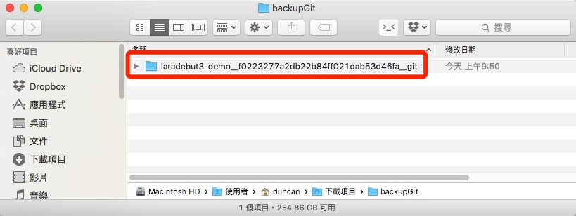
還原 .git
Script
目的是將先前備份的 .git 還原回 product 裡
測試一些指令後想把先前備份的 .git 還原回來
語法裡有使用 rm -rf 指令，請小心使用
語法裡有使用 rm -rf 指令，請小心使用
語法裡有使用 rm -rf 指令，請小心使用
檔案路徑：~/SourceTree_Actions/restoreGitFolder.sh
$1 → 在 SourceTree 使用時，設定讓它帶入 repo path，為了區別不同 product 下的 .git
|
|
使用方式
|
|
開啟設定介面 SourceTree → Preferences 或 快速鍵 CMD + ,
切換至 Custom Actions
新增 Add
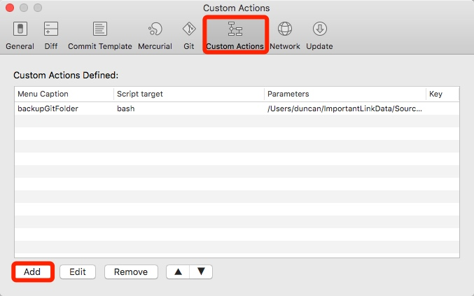
Menu Caption → restoreGitFolder (自訂)
Script to run → bash (使用 bash 來執行 script)
Parameters → /SourceTree_Actions/restoreGitFolder.sh $REPO script 路徑，且帶入參數 $REPO
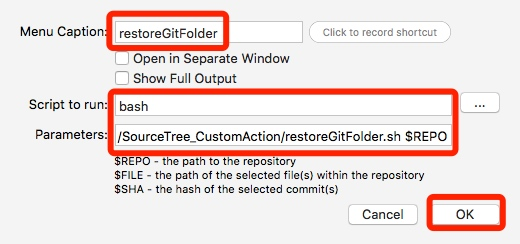
新增完後會看到剛新增的項目
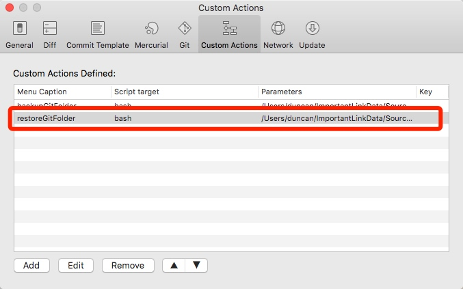
|
|
因為此 Script 是針對 Repo 來做處理，所以要在指定的 Repo 上按右鍵
右鍵 → Custom Actions → Repository Actions → restoreGitFolder
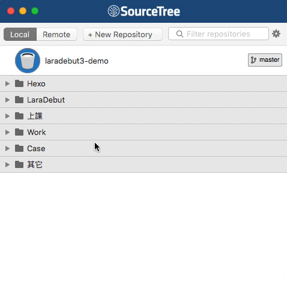
這個是報錯的畫面，意思是找不到 git log
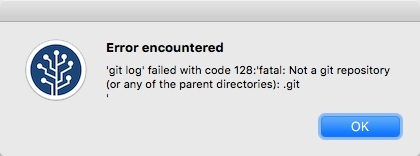
差異打包
Script
目日是將 HEAD 與某個 commit 做差異打包
有時在功能完成後要放到其它環境下時，該環境可能不沒有 GIT，這時會需要做差異打包上傳
檔案路徑：~/SourceTree_Actions/archiveCustomCommit.sh
$1 → 在 SourceTree 使用時，設定讓它帶入自行選擇的 Commit SHA
|
|
使用方式
|
|
開啟設定介面 SourceTree → Preferences 或 快速鍵 CMD + ,
切換至 Custom Actions
新增 Add
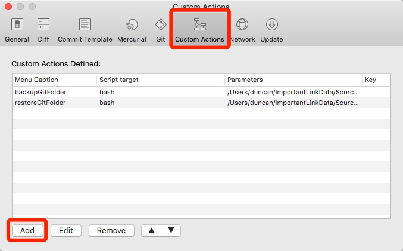
Menu Caption → restoreGitFolder (自訂)
Script to run → bash (使用 bash 來執行 script)
Parameters → /SourceTree_Actions/archiveCustomCommit.sh $REPO $SHA Script 路徑，且帶入參數 \$REPO、\$SHA
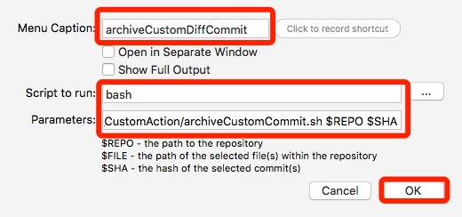
新增完後會看到剛新增的項目
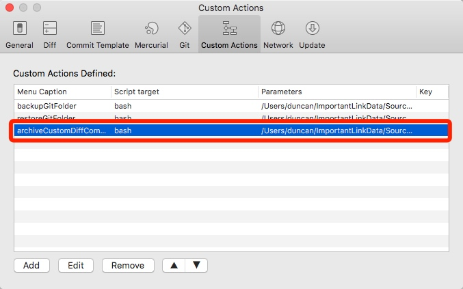
因為此 Script 是針對 HEAD 與指定 Commit 來做處理，所以要在指定的 Commit 上按右鍵
右鍵 → Custom Actions → archiveCustomDiffCommit
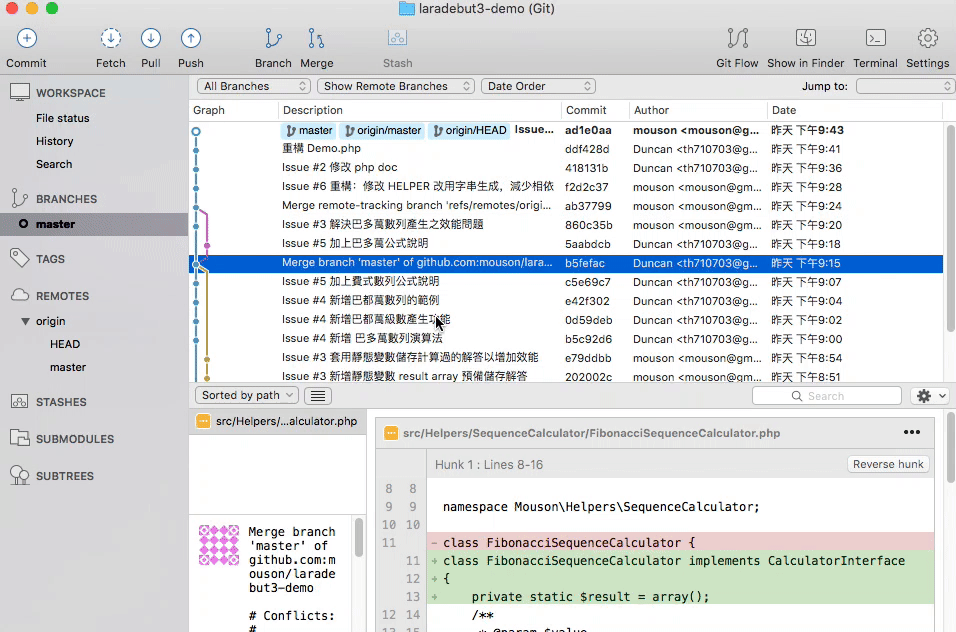
此範例是要將 ad1e0aa 與 b5fefac 兩個 Commit 的差異做打包
執行完後，會在指定的目錄下看到差異打包檔
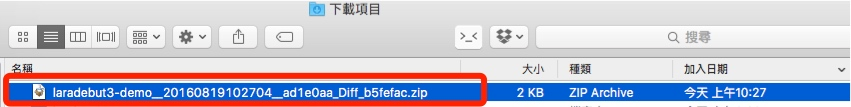
如果 Commit 上是有 Tag 的話
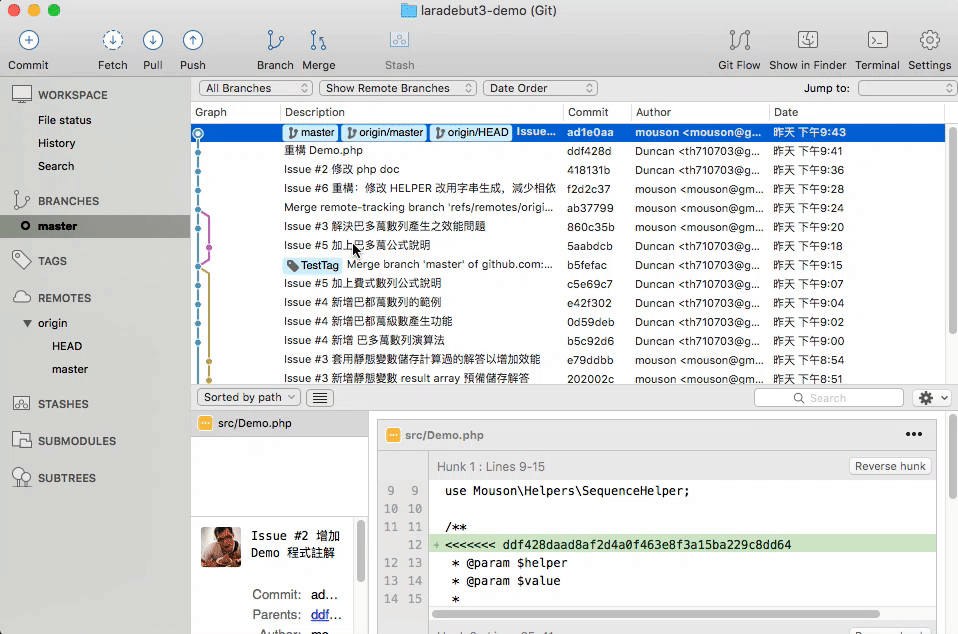
此範例是要將 ad1e0aa 與 b5fefac(TestTag) 兩個 Commit 的差異做打包
執行完後，會在指定的目錄下看到差異打包檔，並且使用 Tag 來當檔名
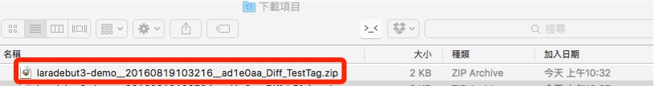